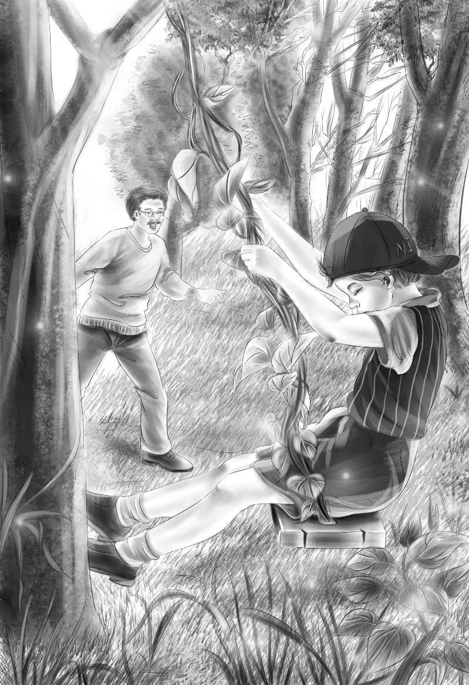

Bread
打完盹，大家一一醒来。想到自己竟然会在沙滩上睡着，他们不禁笑了起来。
“中午睡个午觉还是很有必要的，”奥登先生说，“阳光实在是太毒了。”
“我想回去看看面包果烤得怎么样了。”杰西说。
“我也想看看。”迈克说，“面包果其实长得一点都不像面包。”
“没错，它们长得像绿色的脑子。”班尼赞同道。
回程的路上，他们跳过了石头，沿着白沙滩缓缓而行。“我们该把白沙滩这片海叫鲨鱼海湾！”迈克提议。
“名字很贴切，”纳思说，“这片海湾确实非常危险！”
大家的目光都投向看似平静的水面——只有班尼除外，他的视线被海对面的树林吸引住了，林子里似乎有动静。班尼又仔细看了看，这次终于看清楚了，是一条藤蔓在晃动。藤蔓的一头高挂在树上，另一头应该是挂在另一棵树上，只是班尼的视线被挡住了。
“是秋千呢！”班尼不禁大声惊呼，“大家快看！”
亨利说：“太不可思议了！真的是秋千！”

纳思穿过树丛，走了过去。他使劲扯了扯秋千，藤蔓并没有掉下来。
“让我坐上去试试！”迈克嚷道。他在巨大的藤蔓上坐了下来，用力向前荡去。秋千看上去非常结实。
“班尼，我可以荡得很高呢！”迈克兴奋地喊着。
“迈克，小心点，”爷爷说，“别荡得太猛，秋千随时可能会断掉。在这座小岛上摔断腿可就麻烦喽！”
亨利疑惑地问道：“藤蔓不可能自己长成秋千的形状，对吧，爷爷？”
“长成这种形状倒是有可能。”奥登先生回答道，“不过我看这条藤蔓不像，你们瞧，藤上连一片叶子都没有，肯定是被人为摘掉的。”
“啊，天哪，”杰西说，“谜团变得越来越大了！”
“我倒觉得谜底越来越浮出水面啦！”迈克悠哉游哉地荡着秋千，“我们迟早会弄清楚，究竟是谁做了秋千，又是谁住在这座岛上。”
“是啊，咱们有的是时间，现在掌握的线索也很多！”班尼说，“迈克，让我荡一会儿秋千吧！”
“不行，你们改天再来玩吧！”纳思突然发话了，“咱们得赶快回去吃面包果啦。”
等回到住处，纳思把面包果从火堆里取出来后，面包果已经被烤得软乎乎了，就像四颗巨大的鸡蛋。他将果子一一拿出来，放在大叶子上。
“这些叶子大得就像雨伞。”杰西说。
“没错，要是下雨的话，咱们可以拿这种叶子当伞用。”纳思说，“瞧，面包果里有好多核。”果然，他从面包果里取出了三十多颗果核，每颗都有小核桃的大小。
纳思说：“大家快来吃吧！这些果核和坚果一样的味道，营养丰富着呐！吃完果核，我们还可以用蛏子壳挖软软的果肉吃。”
“看来吃什么都得用勺子，咱们要尽快将勺子做好才行。”亨利说。
班尼吃了一口面包果核，不禁赞道：“真好吃，就是小核桃的味道。”
“我去开一罐肉罐头吧！”亨利提议道，“这样我们就能边吃肉边吃面包啦。”
他打开罐头，分给大家。冷肉配上热面包果，味道美极了！正餐过后，大家又吃了香蕉当饭后甜点。然而他们并不知道，自己吃得正欢的时候，有人一直在偷偷地窥探着他们。
日子一天一天地飞快过去，每天的生活都充满着惊喜。他们已经将茅屋修好，再不怕下雨了。可是每天都是大晴天，并没有一点下雨的征兆，连续的天晴让蓝色海湾变得越来越湛蓝，绿色海湾则越来越碧绿。
一天，大家又来到泉水边。班尼首先就去看他做过标记的白贝壳，发现贝壳已经被移动了位置。
班尼喃喃自语道：“有人动过它，上次它是放在白石头边儿上的，现在被移到了另一边。一定是有人天天来这儿喝水。”
不过他们并没看到什么人，那只八哥也没有回来。他们把“探索者二号”里的沙子清理干净，将船洗过之后，拖到了沙滩上。小船看上去漂亮极了，这次他们再没听到树顶有抽泣声。
现在，所有人都拥有了一把像样的勺子，也有了像样的碗——碗是用半个椰子壳做成的，杰西还说：“我觉得椰奶比奶粉好喝，它更甜一些。”
“甘蔗最好吃，”迈克说，“甘蔗才是最甜的东西呢！”
“甘蔗就是我们的糖果，”班尼说，“只要想吃，咱们随时都可以采一根过来。”
日子就这么开心地过着，没有人想到“海星号”，因为大家都不希望它那么早来，他们太享受现在的时光了！